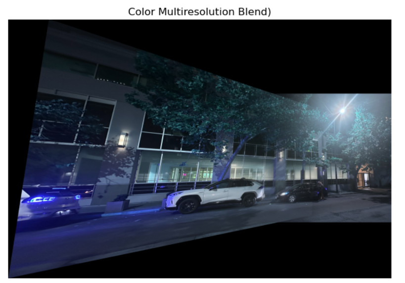
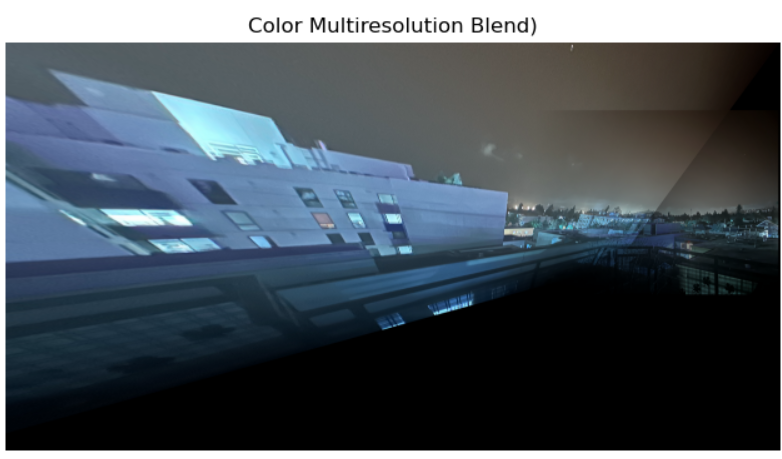
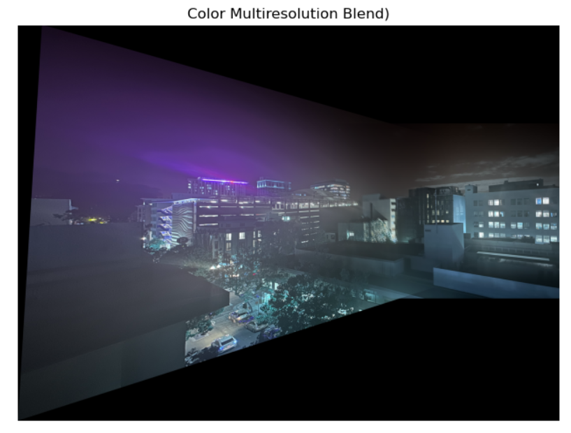
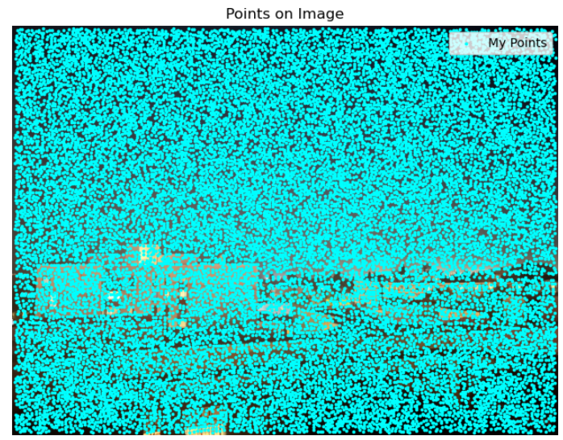
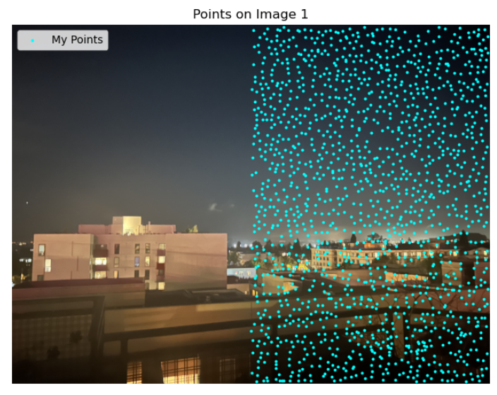

Part A.1
Below are the three image pairs I used for homographies. First is an image at ground level of a street in downtown Berkeley, the second image is a view of Berkeley from a rooftop, and the third image is the first street viewed from a rooftop.

|

|

|

|

|

|
Part A.2
Correspondence Set 1

To find our homography matrix we find the value of h that maximizes ||Ah||^2 which is equivalent to the eigenvector corresponding to the smallest eigenvalue of A^TA.


Correspondence Set 2


To find our homography matrix we find the value of h that maximizes ||Ah||^2 which is equivalent to the eigenvector corresponding to the smallest eigenvalue of A^TA.


Correspondence Set 3


To find our homography matrix we find the value of h that maximizes ||Ah||^2 which is equivalent to the eigenvector corresponding to the smallest eigenvalue of A^TA.

Part A.3
For these two images, we can see that nearest neighbor interpolation is a lot less smooth in comparison to bilinear interpolation. Though it does take longer, for files of this size, the time difference is negligible.


Part A.4
To stitch together my images, I applied the homography transformation on one of the images to put it in the same perspective as the first. I then aligned the edges of the images so that they overlapped correctly. Finally, I blended the images together using multiresolution blending featured in project 2.



Part B.1
Harris Corner Detection shows us where there are areas of high contrast in all directions. To avoid our corners clustering in high contrast regions, we use ANMS to choose local maxima.


Part B.2
For each corner found using AMNS, I took a 40x40 window around the corenr and averaged it down into an 8x8 matrix. I then bias/gain normalized it to get a feature that generally describes the corner. This can be used to match the general region around corners in two images to determine whether or not they match. Below are some examples of what the feature descriptors look like.